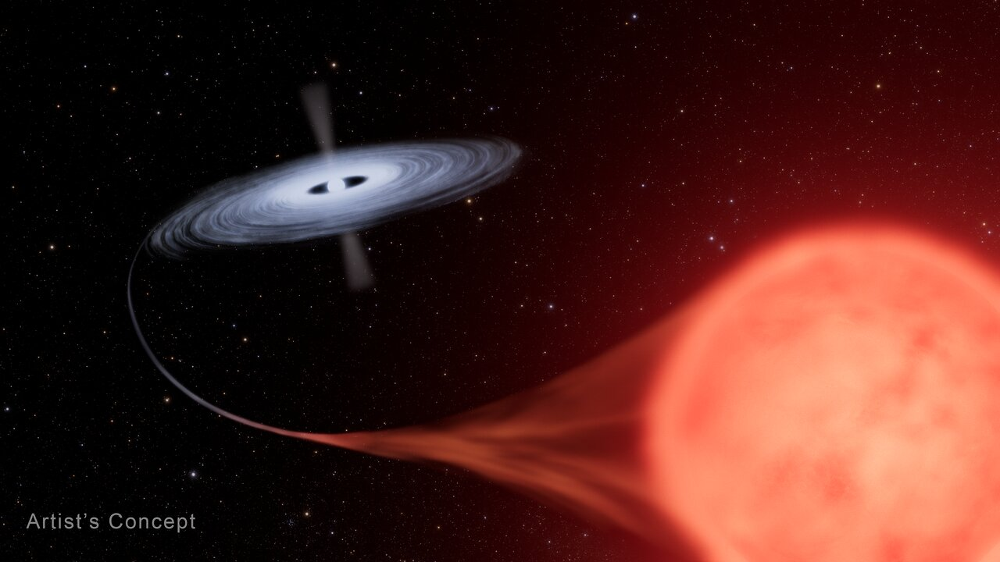

A nova is a sudden, transient brightening of a white dwarf in a close binary star system, caused by a thermonuclear runaway on its surface. The white dwarf is not destroyed, distinguishing a nova from a supernova, and the eruption may repeat.

Credit: NASA, ESA, L. Hustak (STScI)
The mechanism begins with a cataclysmic variable (CV) binary: the companion star overfills its Roche lobe and transfers hydrogen-rich material through the inner Lagrangian point, forming an accretion disk around the white dwarf. The accreted hydrogen accumulates in a degenerate layer on the white dwarf surface; because degenerate matter cannot expand to regulate temperature, the layer heats without pressure relief. When the base of this layer reaches approximately 20 million K, hydrogen fusion ignites explosively — a thermonuclear runaway. Radiation pressure briefly exceeds the Eddington luminosity, and the outer envelope is ejected at 500–5,000 km s−1, producing an expanding shell visible in optical, radio, and X-ray emission for centuries thereafter. The white dwarf itself survives and resumes accreting from its companion.
Novae appear to an observer as a new naked-eye star — the term derives from the Latin nova stella, meaning ‘new star’. At peak, a nova brightens by 1,000 to 100,000 times, reaching an absolute magnitude of roughly −6 to −10. The light curve rises over hours to days, then declines over weeks to months. Spectra at peak show broad emission lines with P Cygni profiles, indicating fast-moving ejecta. Novae are classified by their decline speed: fast novae (NA) drop three magnitudes in fewer than 100 days and tend to be more luminous; slow novae (NB) take 150 or more days and are generally less luminous. Very slow novae (NC), associated with giant companions in symbiotic binaries, can take years to fade.
A subset of novae — recurrent novae (NR) — show multiple recorded outbursts separated by decades. Recurrent novae generally involve more massive white dwarfs accreting at higher rates, which shortens the interval between eruptions. Well-known examples include RS Ophiuchi, which erupted most recently in 2021, and T Coronae Borealis (the ‘Blaze Star’), a recurrent nova with outbursts recorded in 1866 and 1946. Because recurrent novae on white dwarfs near the Chandrasekhar limit may accumulate mass net per cycle, they are studied as potential progenitors of Type Ia supernovae.
Novae also contribute to the chemical enrichment of the interstellar medium. Their ejecta are enriched in helium, carbon, nitrogen, oxygen, neon, and magnesium — material dredged up from the underlying white dwarf core. Novae involving oxygen-neon white dwarfs produce distinctive neon-rich ejecta. Classical novae are now considered a significant source of galactic lithium-7 enrichment. Since 2010, the Fermi Gamma-ray Space Telescope has detected several novae as gamma-ray sources, indicating that shocks within the ejecta can accelerate particles to relativistic energies; V407 Cygni (2010) was the first such detection.
The term ‘nova’ was introduced by Tycho Brahe in his 1573 work De nova stella, though the event he described — now known as SN 1572 — was actually a supernova. Novae and supernovae were not formally distinguished until 1934, when Walter Baade and Fritz Zwicky recognised them as separate phenomena of very different energies.
See also: classical novae, recurrent novae, dwarf novae, cataclysmic variable, white dwarf, Roche lobe overflow, Type Ia supernova.